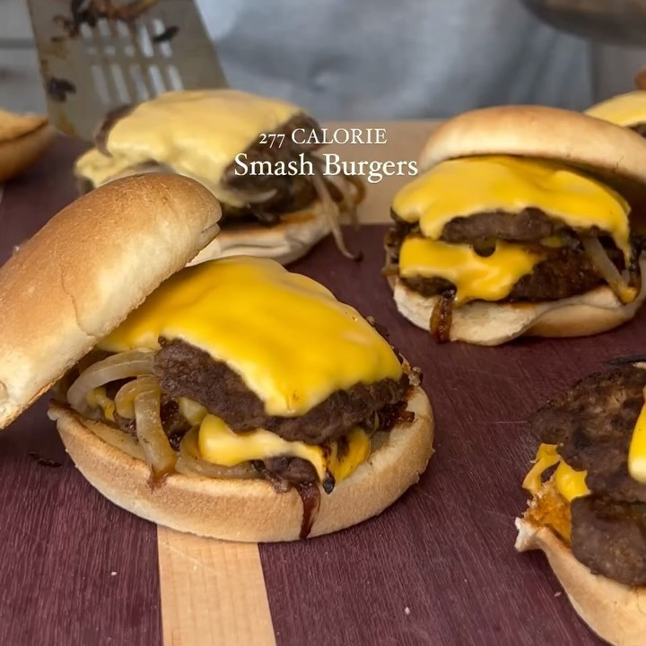

Smash Burgers
Ingredientes:
* Hace de 7 a 8 hamburguesas
- 450 g de carne molida magra 93/7
- 2 cucharaditas de sal
- 2 g de ajo en polvo
- 2 g de cebolla en polvo
- Pimienta negra
- 15 g de mostaza
- Queso americano Velveeta
- Cebollas
Ingredientes para la salsa:
- 15 g de mayonesa ligera
- 8 g de relish dulce
- 8 g de mostaza
- 8 g de ketchup
- 1 cucharadita de vinagre
- 1 cucharadita de pimentón
- Cebollas picadas
Instrucciones:
- En un bowl añade la carne y sazona con sal, ajo y cebolla en polvo, pimienta negra y un poco de
mostaza. Mezcla todo bien
- Haz bolitas con la carne de 60 g cada bola
- En el sartén, cuece dos bolas (aplastadas en forma de carne de hamburguesa) y añade cebolla. Sazona
y aplastalas. Voltealas y añade ½ rebanada de queso a cada una. Cubre la sartén con la tapa. Pon la
carne una encima de la otra. Repite hasta acabar la carne.
- Para la salsa, combinar los ingredientes de la salsa hasta que quede una mezcla homogénea
- Arma la hamburguesa usando la salsa y las dos carnes por cada hamburguesa